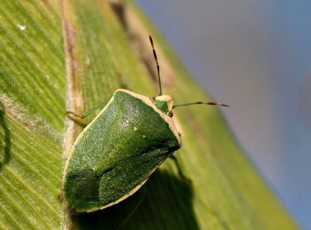

Chinche
Despide un olor intenso, irritante y persistente cuando es molestado, se siente amenazado o es pisado. Se alimenta de una gran variedad de plantas, se reproduce muy rápido y puede acabar con cultivos.
Despide un olor intenso, irritante y persistente cuando es molestado, se siente amenazado o es pisado. Se alimenta de una gran variedad de plantas, se reproduce muy rápido y puede acabar con cultivos.
Deposita sus huevos en las hojas, y supone una amenaza para la planta huésped porque se alimenta de los contenidos celulares de las hojas, absorbiéndolos célula a célula, dejando una leve y pálida mancha que contrasta con el verde de la epidermis.
Pueden aparecer durante todo el año, en primavera verano estan más activos y puede llegar a haber más cantidad. Comen las hojas de las plantas y si no se controla a tiempo pueden terminar matando a la planta.
Suelen aparecer en las suculentas, su apariencia es similar a la del algodón. Se alimenta de las fibras de la plantas sí no se combate, no solo se v a a reproducir rapidamente en nuestros cultivos, sino que tambien puede matar a las plantas.
Son bichos de hasta 4mm de tamaño, pueden ser de distintos colores como verde, negro u otro. El pulgón se alimenta de la salvia de la planta y asi impide el correcto desarrollo y si no se controla puede terminar muriendo. También libera fluidos dulces que atrae hormigas, estas se comen las hojas de las plantas.
Suelen aparecer por exceso de humedad y altas temperaturas, algunos no son tan malignos, otros como, el fusarium o bortritys pueden matar a la planta en cuestion de dias (el primero una vez que aparece no tiene cura).